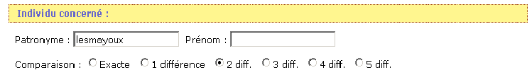
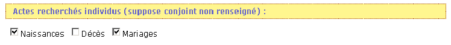
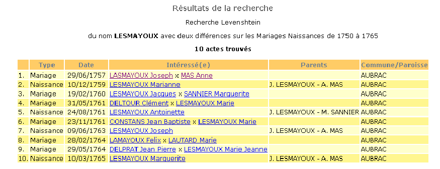
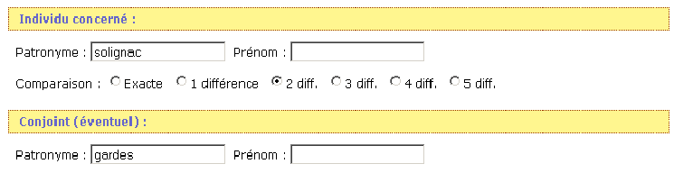
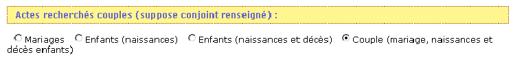
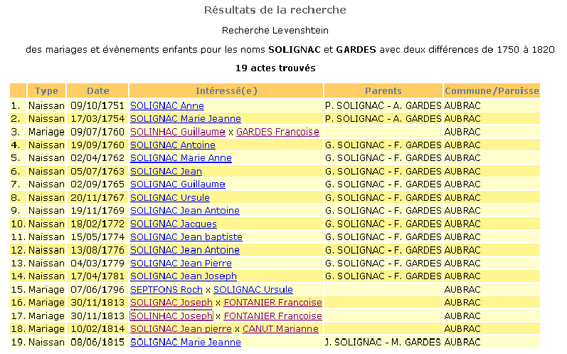

Cette recherche (voir ici les principes)
est puissante et vous donnera souvent satisfaction.
Mais elle est très lourde et vous devez la cibler sous peine de ne rien obtenir car le serveur informatique ne pourra exécuter la tache dans le temps qui lui est imparti. Dans ce cas là vous aurez, en voulant aller trop vite, perdu votre temps.
De manière générale :
mettez des critères de date (50 ou 100 ans d'intervalle de recherche sont un bon compromis)
Ainsi vous obtiendrez un nombre d'actes raisonnable (il ne sert à rien d'avoir 50 pages de résultats !)
Si vous ne trouvez pas votre bonheur modifiez ou les différences ou les critères de date. Mais progressivement, et en fonction des noms que vous recherchez ! (Si vous cherchez avec 5 différences sur un nom de 5 lettres dans une base assez conséquente vous allez récupérer des milliers de noms inutiles)
A) Recherche d'un individu (Prérequis : ne rien mettre dans le champs conjoint)
La recherche se fait sur le nom selon les principes indiqués ici et sur le prénom avec la méthode « est au début » de la recherche avancée (p dans le champ prénom cherche tous les prénoms commencant par p : pierre, paul ...)
Exemple :


Le résultats peuvent être les suivants :

On
constatera que l'on récupère LASMAYOUX, LAMAYOU,
LESMAYOU
B) Recherche de couples (Prérequis : compléter le champ conjoint)
Exemple :


On cherche au choix :
les mariages des couples
les naissances des enfants de ces couples
les naissances et les décès des enfants de ces couples (si les décès sont filiatifs)
la totale : les mariages des couples, les naissances et décès de leurs enfants et les mariages de ceux ci (exemple ci dessous)
Ceci donne par exemple les résultats suivants :
